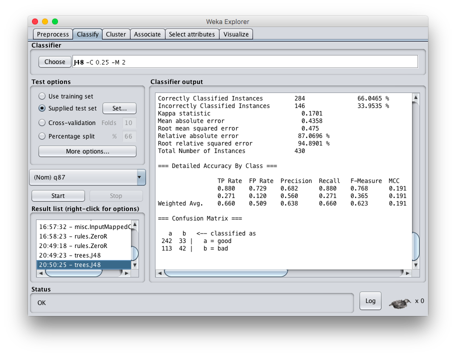

Asian Americans are usually considered as one monolithic group for census and polling purposes. Data about Asian Americans are then used to make generalizations or reach conclusions. However, this fails to consider the differences between subgroups of Asian Americans. For example, there are significant differences in income and social mobility between East Asians and Southeast Asians, largely due to their circumstances when immigrating to the United States. These differences are lost in the noise when grouping Asian Americans as a whole, and building a machine learning classifier may highlight some of these differences, which would offer more granular insight into the Asian American experience.
I began this project by seeking to gain a better understanding of Asian American political views. Asian Americans make up a notable portion of the population in the United States, but they tend to not be very politically relevant due to low levels of participation in the political process. I hoped to find out why this is the case. Using a data set from the Pew Research Center, I built some machine learning classifiers to attempt to find patterns. I tried using decision trees, logistic regression, nearest neighbor, and multi-layer perceptrons, but these algorithms performed only marginally better than ZeroR. Explanations for this can be found in the report below. As a result of this failure, I pivoted to examine Asian Americans’ financial standing instead. Using decision trees, this surfaced some notable inferences from the data.
 Figure 1: Test results in WekaThe data set is a collection of responses to a survey conducted by the Pew Research Center in 2012. There are 3510 examples, and for each approach, the number of examples used for classification varied. 15% were allocated for the testing set, and the rest were used for training. There were over 100 questions in the survey, and again, various subsets of these features were used depending on the approach.
Building a classifier for political leanings with this data set proved to be challenging. Analyzing the data, there are some explanations for this. First, the data was heavily skewed: 50% of the participants in the study leaned toward the Democratic party and only 28% leaned toward the Republican party. The rest either declined to respond or were independent. This led to a fairly high score for ZeroR which was difficult to outperform. To resolve this issue, I tried pre-processing the data into Democrat vs. non-Democrat rather than Democrat vs. Republican, but this further worsened the accuracy. Introducing the independent and non-respondents into the data set made it even more difficult to determine which features were tied to political leanings. Feature selection was done manually; I selected features that are traditionally relevant to political leanings such age, education, income, and importance of religion. In addition to this, I included Asian subgroup and birthplace. I expected that a decision tree would reveal some patterns, but it failed to accurately classify with these features. I tried varying the feature set, but the only way I could improve accuracy to a reasonable level was by including obviously partisan issues like gay marriage and abortion. Using features such as those seemed to be trivial considering my overarching goals of the project. I also attempted using other algorithms and different kinds of pre-processing, such as grouping data into fewer categories (an example of this is grouping Asian subgroups into the more general categories of East Asian and Southeast Asian), but the improvements were not enough.
After investigating other options, I found that financial standing would be a better class, so I pivoted the project. Building a decision tree classifier with this produced better results. After experimenting with various feature sets, I found the following to be the most informative and accurate.
Note: Each feature has a code (headers of each column) that corresponds to a question asked in the survey.
Class:
q87: How would you rate your own personal financial situation? Would you say you are in excellent shape, good shape, only fair shape or poor shape financially?
This class was pre-processed into two categories: good (excellent or good shape) and bad (fair or poor shape).
Features:
| Code | Question |
|---|---|
| asnidone | Please tell me which one or more of the following specific Asian groups you are. Are you Chinese, Filipino, Indian, Japanese, Korean, Vietnamese, or of some other Asian background? |
| educ | What is the last grade or class that you completed in school? |
| q10 | Compared to your parents when they were the age you are now, do you think your own standard of living now is much better, somewhat better, about the same, somewhat worse, or much worse than theirs was? |
| q21 | Thinking about the country as a whole, would you describe Americans as very hardworking, or doesn’t this describe Americans? |
| q24 | Overall, do you think of yourself to be a typical American OR very different from a typical American? |
| q80 | Would you say you can carry on a conversation in English, both understanding and speaking-- very well, pretty well, just a little, or not at all? |
I selected this class with the intention of surfacing the variety of Asian American experiences. Asian immigrants have come to America under drastically different circumstances and have found varying levels of financial success. I expected features in this data set to demonstrate how these circumstances contributed to the financial standing of Asian Americans today.
For this task, I was able to achieve better accuracy. As a baseline, the ZeroR accuracy was 50.2056%. I ended up selecting decision trees (specifically J48) as my algorithm because the interpretability of the result was important. I wanted to know which features were the most relevant and how they were related with each other. The training set accuracy was 69.1201% and the test set accuracy was 66.0465%. While these accuracies are not very high, they do show marked improvements over ZeroR. The most valuable insight, however, comes from the decision tree structure.
The decision tree structure reveals several dimensions of the Asian American experience. The feature at the top of the tree is q80, which is regarding the English language skill of the study participant. For those who answered that they could carry on a conversation “just a little” or “not at all,” the tree classified them as having bad financial standing. The majority of these people are likely first generation immigrants, highlighting the lack of opportunities and difficulties associated with not being fluent in English while living in the United States.
On the other hand, for those who answered that they could carry a conversation “very well,” there was only one additional attribute branching below, which was q10. Q10 asks “Compared to your parents when they were the age you are now, do you think your own standard of living now is much better, somewhat better, about the same, somewhat worse, or much worse than theirs was?” Those who answered “much better,” “somewhat better,” or “about the same” were classified as having good financial standing, and those who answered “somewhat worse” or “much worse” were classified as having bad financial standing.
This surfaces the hyper-selectivity of some Asian immigrants. Those who immigrated to find better opportunities for their children were often better educated and more wealthy, simply because immigrating to the United States is an expensive and complicated process (Lee and Zhou 2015). This enabled them to form coethnic communities that were economically viable, and their professional skills could easily be translated into capital for their children, leading to upward social mobility (Lee and Zhou 2015). Immigrants who moved out of necessity, often escaping dangerous conditions in their home country, arrived in the United States without much economic, social, or cultural capital. Without the coethnic communities and hard, quantitative skills to leverage, these immigrants and their children faced many more structural barriers than those who were hyper-selected from their home countries. Respondents of the survey who are fluent in English will most likely be second or later generation immigrants, but the effects of their parents’ immigration can be seen in their financial standing today.
The last branch of the tree is those who responded that they could carry a conversation in English “pretty well,” indicating well-educated first generation immigrants or 1.5 generation immigrants (people who immigrated as children). Interestingly, this branch of the tree was the only one to use Asian subgroups. Certain groups, such as Indian and Japanese, were classified as good on their ethnicity alone, and others, such as Filipino and Vietnamese, were classified as bad for the same reason. This can be tied back to the circumstances of immigration, with many Filipino and Vietnamese immigrants being forced to immigrate as refugees. For other groups, such as Korean and Chinese, the determining factor is education. There were some outliers who had education levels lower than high school, and they were classified as bad financial standing. These people were clearly not hyper-selected. Korean and Chinese Americans who have graduate degrees were classified as good, likely because of the tangible credibility of that level of education. The data was fairly split for college graduates (B.A. or B.S.). This could potentially be attributed to racial biases that Asian Americans face when they are fluent, but have accents. These racial biases are significant and can prevent qualified Asian Americans from attaining managerial positions (Tang 1993).
My findings from this project were not particularly conclusive, but the results are intriguing. At the very least, they show that there is credibility to the argument that Asian Americans have different experiences and grouping them as one large, panethnic group loses some nuance. Historical context continues to affect the experiences of Asian Americans today, and that background can be lost in the noise.